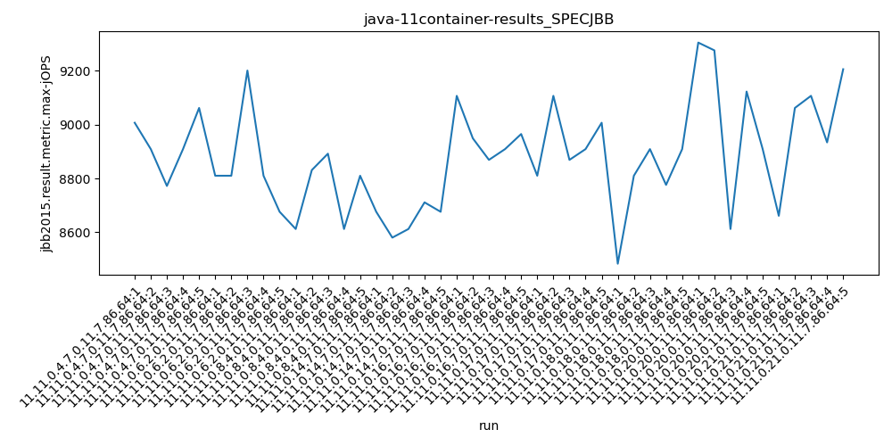

java-11 SPECJBB
Context at bottom
/home/jvanek/git/benchmarks-in-nested-virtualisation-toolchain/final_results/container_results/container-results_J2DBENCH
java-11
SPECJBB
/home/jvanek/git/benchmarks-in-nested-virtualisation-toolchain/final_results/container_results/container-results_RADARGUNs3
java-11
SPECJBB
/home/jvanek/git/benchmarks-in-nested-virtualisation-toolchain/final_results/container_results/container-results_RADARGUNs1
java-11
SPECJBB
/home/jvanek/git/benchmarks-in-nested-virtualisation-toolchain/final_results/container_results/container-results_DACAPO
java-11
SPECJBB
/home/jvanek/git/benchmarks-in-nested-virtualisation-toolchain/final_results/container_results/container-results_SPECJBB
java-11
SPECJBB
container-results_SPECJBB
- container-results_SPECJBB - max-jops
- container-results_SPECJBB - critical jops
container-results_SPECJBB - max-jops
Expected number of java-11 JDKs: 11
1st avgmed_alljdks_metric:
/home/jvanek/git/benchmarks-in-nested-virtualisation-toolchain/final_results/result_processing.py /home/jvanek/git/benchmarks-in-nested-virtualisation-toolchain/final_results/container_results/container-results_SPECJBB jbb2015.result.metric.max-jOPS False
values: [9007, 8909, 8772, 8909, 9062, 8810, 8810, 9201, 8810, 8676, 8612, 8831, 8892, 8612, 8810, 8676, 8580, 8612, 8711, 8676, 9107, 8949, 8869, 8909, 8965, 8810, 9107, 8869, 8909, 9007, 8483, 8810, 8909, 8776, 8909, 9305, 9276, 8612, 9123, 8909, 8661, 9062, 9107, 8934, 9206]

Expected number of iterations: 5
final number of values: 45 out of 55
Pass rate: 81.8%
values: (8483, 9305, 8879.133333333333, 8892)

** accuracy from all jdks and runs
more is better
MIN: 8483
MAX: 9305
AVG: 8879.133333333333
MED: 8892
Relative differences 1:
MIN-MAX: 9.0 %
MIN-AVG: 4.0 %
MIN-MED: 5.0 %
MAX-MIN: -10.0 %
MAX-AVG: -5.0 %
MAX-MED: -5.0 %
AVG-MED: 0.0 %
stored to java-11.properties. sort | uniq that!
2nd avgmed_by_jdk_metric:
values: [8931.8, 8861.4, 8751.4, 8651.0, 8959.8, 8940.4, 8777.4, 9045.0, 8994.0]

values: [8909, 8810, 8810, 8676, 8949, 8909, 8810, 9123, 9062]

values: (8651.0, 9045.0, 8879.133333333333, 8931.8)
values: (8676, 9123, 8895.333333333334, 8909)

** accuracy from all jdks where runs were avged
more is better
MIN: 8651.0
MAX: 9045.0
AVG: 8879.133333333333
MED: 8931.8
Relative differences 1:
MIN-MAX: 4.0 %
MIN-AVG: 3.0 %
MIN-MED: 3.0 %
MAX-MIN: -5.0 %
MAX-AVG: -2.0 %
MAX-MED: -1.0 %
AVG-MED: 1.0 %
stored to java-11.properties. sort | uniq that!
** accuracy from all jdks where runs were medianed
more is better
MIN: 8676
MAX: 9123
AVG: 8895.333333333334
MED: 8909
Relative differences 1:
MIN-MAX: 5.0 %
MIN-AVG: 2.0 %
MIN-MED: 3.0 %
MAX-MIN: -5.0 %
MAX-AVG: -3.0 %
MAX-MED: -2.0 %
AVG-MED: 0.0 %
stored to java-11.properties. sort | uniq that!
container-results_SPECJBB - critical jops
Expected number of java-11 JDKs: 11
1st avgmed_alljdks_metric:
/home/jvanek/git/benchmarks-in-nested-virtualisation-toolchain/final_results/result_processing.py /home/jvanek/git/benchmarks-in-nested-virtualisation-toolchain/final_results/container_results/container-results_SPECJBB jbb2015.result.metric.critical-jOPS False
values: [2003, 2306, 2298, 2309, 2222, 2069, 2179, 2458, 2244, 2141, 2290, 2306, 2293, 1924, 2258, 2447, 2289, 2405, 2103, 2241, 2374, 2327, 2412, 2237, 2526, 2413, 2648, 2406, 2564, 2672, 2482, 2455, 2494, 2490, 2430, 2500, 2767, 2261, 2803, 2429, 2823, 2231, 2472, 2428, 2633]

Expected number of iterations: 5
final number of values: 45 out of 55
Pass rate: 81.8%
values: (1924, 2823, 2379.1555555555556, 2405)

** accuracy from all jdks and runs
more is better
MIN: 1924
MAX: 2823
AVG: 2379.1555555555556
MED: 2405
Relative differences 1:
MIN-MAX: 32.0 %
MIN-AVG: 19.0 %
MIN-MED: 20.0 %
MAX-MIN: -47.0 %
MAX-AVG: -19.0 %
MAX-MED: -17.0 %
AVG-MED: 1.0 %
stored to java-11.properties. sort | uniq that!
2nd avgmed_by_jdk_metric:
values: [2227.6, 2218.2, 2214.2, 2297.0, 2375.2, 2540.6, 2470.2, 2552.0, 2517.4]

values: [2298, 2179, 2290, 2289, 2374, 2564, 2482, 2500, 2472]

values: (2214.2, 2552.0, 2379.155555555555, 2375.2)
values: (2179, 2564, 2383.1111111111113, 2374)

** accuracy from all jdks where runs were avged
more is better
MIN: 2214.2
MAX: 2552.0
AVG: 2379.155555555555
MED: 2375.2
Relative differences 1:
MIN-MAX: 13.0 %
MIN-AVG: 7.0 %
MIN-MED: 7.0 %
MAX-MIN: -15.0 %
MAX-AVG: -7.0 %
MAX-MED: -7.0 %
AVG-MED: -0.0 %
stored to java-11.properties. sort | uniq that!
** accuracy from all jdks where runs were medianed
more is better
MIN: 2179
MAX: 2564
AVG: 2383.1111111111113
MED: 2374
Relative differences 1:
MIN-MAX: 15.0 %
MIN-AVG: 9.0 %
MIN-MED: 8.0 %
MAX-MIN: -18.0 %
MAX-AVG: -8.0 %
MAX-MED: -8.0 %
AVG-MED: -0.0 %
stored to java-11.properties. sort | uniq that!
/home/jvanek/git/benchmarks-in-nested-virtualisation-toolchain/final_results/container_results/container-results_JMH
java-11
SPECJBB
pass rates:
container-results_SPECJBB=81.8%
Context:
- container_results
- SPECJBB